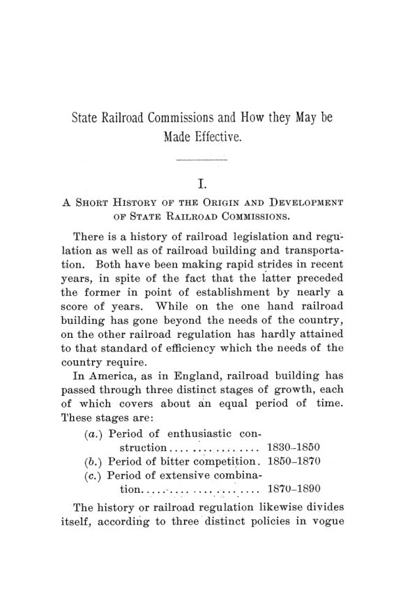

Trinta e quatro comissões, nenhum padrão: a regulação ferroviária de 1891
Leitura: 10 min
Em 1891, 34 estados americanos tinham comissões ferroviárias e quase nenhuma regra em comum. Frederick C. Clark propôs reguladores técnicos, contabilidade uniforme e cooperação entre estados.


Em 1885, diante de uma comissão do Senado americano, o secretário da comissão ferroviária de Minnesota, Mr. Warner, foi perguntado se os cidadãos lesados processavam as ferrovias. Ele disse que sabia de apenas dois processos. Os dois autores ganharam. Um deles, um homem da região da Northern Pacific, gastou em litígio cerca de três vezes o que recebeu da empresa.
O caso abre o argumento de Frederick C. Clark, professor de história e economia política na escola secundária de Ann Arbor, em Michigan. A monografia nasceu de uma tabela anexada à sua dissertação de mestrado na Universidade de Michigan e foi ampliada com o incentivo de Henry C. Adams. A tese é simples: as leis existiam, mas não havia máquina nem força para aplicá-las.
Como os Estados Unidos chegaram às comissões?
Clark divide a história em três períodos de cerca de vinte anos. De 1830 a 1850, a construção é entusiasmada e o Estado não interfere: financia. Maryland subscreveu US$ 3 milhões em ações da Baltimore and Ohio em 1835, e a cidade de Baltimore outro tanto. De 1850 a 1870, vêm as leis gerais e a fé na concorrência. A partir de 1870, as comissões.
A fé na concorrência custou caro. A crença, diz Clark, era que quanto mais ferrovias, mais baratas as tarifas. Vieram guerras tarifárias, a crise de 1857 e, depois da Guerra Civil, uma nova onda: o acréscimo anual de linhas triplicou entre 1868 e 1871, à frente da demanda real. O desfecho foi o pânico de 1873 e, no Oeste, a revolta dos agricultores conhecida como movimento Granger.
As primeiras comissões cuidavam de segurança. New Hampshire criou em 1844 a primeira junta para inspecionar as linhas e informar o Legislativo; Connecticut fez o mesmo em 1853, depois que um trem de passageiros caiu numa ponte levadiça aberta. O passo decisivo veio em 1869, quando Massachusetts juntou numa só comissão permanente duas funções antes separadas: arbitrar disputas e supervisionar as empresas.
Persuadir ou mandar?
Clark descreve dois tipos. A comissão de Massachusetts, de três membros nomeados pelo governador para mandatos de três anos, examinava livros, ouvia queixas e recomendava leis, mas não tinha poder de impor suas ordens. Apoiava-se na opinião pública, na imprensa e na disposição do Legislativo de acolher suas recomendações. Sob Charles Francis Adams Jr., chegou a propor a compra estatal da linha Fitchburg, de 51 milhas, como experimento; a ideia foi abandonada por se julgar que a política contaminaria a gestão.
Illinois seguiu o caminho oposto. A constituição de 1870 obrigou o Legislativo a impedir a extorsão e a discriminação e a fixar tarifas máximas. A lei de 1873 inverteu a regra do direito comum: as tabelas da comissão passaram a valer como prova prima facie de razoabilidade, e cabia à ferrovia provar que uma tarifa acima delas era razoável, e não ao usuário provar o contrário.
Funcionou enquanto durou. No ano encerrado em 30 de junho de 1880, a comissão recebeu 47 queixas formais, 25 delas de extorsão, e resolveu todas. Em 1884 eram três. Mas a Suprema Corte, no caso Wabash, decidiu que um estado não podia regular tarifas de transporte entre estados. Como o grosso do tráfego era interestadual, as ferrovias voltaram a ficar, na prática, livres.
O que a lei federal de 1887 mudou?
A resposta foi a Interstate Commerce Act. Uma comissão do Senado presidida pelo senador Cullom ouviu comerciantes, agricultores, advogados e ferroviários e acumulou 1.456 páginas de depoimentos. O projeto passou no Senado em 14 de janeiro de 1887, por 45 a 15, e na Câmara em 21 de janeiro, por 219 a 41. O presidente Cleveland o assinou em 4 de fevereiro.
O primeiro efeito surpreendeu quem previa desastre para as ferrovias. Segundo o juiz Cooley, presidente da comissão federal, nos primeiros seis meses a lei ajudou as empresas: o que ganharam com o fim dos favores a clientes privilegiados superou o que perderam com a regra do percurso curto. E acrescentou que o período mais favorável foi
“exatamente aquele em que suas disposições foram mais bem observadas” (precisely that during which its provisions were best observed)
Depois vieram os abatimentos secretos, o subfaturamento de cargas e outras manobras. Para Clark, isso provava duas coisas: a lei carecia de força, e havia fontes de desordem que nenhum legislador ainda atacara.
Por que 34 comissões não faziam um sistema?
O coração do trabalho são as tabelas do apêndice, verificadas pelos próprios comissários. Trinta e quatro estados mantinham comissões: 13 supervisoras, no molde de Massachusetts; 17 reguladoras, no molde de Illinois; e 4 que eram apenas órgãos fiscais ou estatísticos. Florida e Tennessee haviam tentado o sistema e desistido. Dentro de cada grupo, nenhuma comissão era igual a outra.
O tamanho das comissões não seguia critério algum. Ohio tinha um único comissário para 7.797,15 milhas de linha, 4,94% da malha do país; Vermont tinha três para 1.012,54 milhas, 0,64%. Os mandatos iam de dois anos, em Vermont, a seis, na Carolina do Sul e na Geórgia. Uns comissários eram nomeados, outros eleitos, um escolhido pelo Legislativo.
Para Clark, o pior era a falta de exigência técnica. Só Connecticut, Maine e Geórgia definiam qualificações: em Connecticut, um advogado, um engenheiro civil com dez anos de prática e um homem de negócios. Nos demais, mais de 90% dos estados com comissão, não havia exigência além das de natureza política. Ele cita Charles Francis Adams: no Oeste, os governadores, com medo de viés, procuravam homens
“cuja mente era uma página em branco” (whose minds were a blank)
A diversidade tinha custo para todos. Havia três classificações de frete na mesma região, e a mesma mercadoria podia viajar a duas tarifas diferentes no mesmo trem. Antes da lei federal, ir de Detroit a Chicago saía bem mais barato do que ir de Jackson ou de Ann Arbor a Chicago, no mesmo serviço. Em Missouri e Wisconsin, quem se sentia lesado precisava ir à Justiça por conta própria; nos vizinhos Iowa e Illinois, a comissão cuidava do caso à custa do estado. O resultado, diz Clark, era silêncio de um lado da fronteira e queixas resolvidas do outro.
O que Clark propunha?
Três passos. Primeiro, criar comissões onde não havia: 19 estados e territórios, contando os quatro de órgãos meramente fiscais, somavam cerca de um quarto da malha ferroviária sem regulador de fato. Segundo, uniformizar as leis. Os comissários deveriam ter mandato de pelo menos seis anos, salário que não exigisse sacrifício e juramento de qualificação: dez anos de advocacia para um, dez de gestão ferroviária para outro, quinze de negócios para o terceiro, além de caução de no mínimo US$ 10.000.
“Os dirigentes das ferrovias escolheriam seus maquinistas por critério partidário?” (Would railroad officials choose their efficient engineers on party grounds?)
Ainda no segundo passo: as tarifas fixadas pelas comissões, depois de ouvidas as empresas, deveriam valer como decisão vinculante, com o ônus da prova sobre as ferrovias, como em Illinois. E todas deveriam exigir contabilidade uniforme. Só dez comissões estaduais, 27,7% delas, tinham esse poder, e mesmo a comissão federal evitava usá-lo, porque aplicá-lo de forma desigual seria, ela própria, uma discriminação.
Clark queria inspeção física e financeira. Cada estado teria um engenheiro para percorrer as linhas duas vezes por ano; num único ano, 1.972 empregados ferroviários haviam morrido em serviço. Na parte financeira, propôs três auditores nacionais, um deles o auditor da comissão federal, e ao menos um inspetor por estado, no modelo da inspeção dos bancos nacionais. Aos dirigentes que alegavam não saber nem se uma pá de carvão fora comprada para o vagão nº 20, respondeu que contabilidade sólida presta contas dos centavos.
Defendeu ainda que nenhuma linha nova fosse autorizada sem prova de necessidade, examinada pela comissão, como fazia o Board of Trade inglês. Entre 1860 e 1880, a população americana cresceu 59% e a extensão das ferrovias, 297%. Clark rejeitava a ideia de que toda ferrovia tem direito a viver: uma concessão não garante dividendo.
A cooperação entre reguladores dava resultado?
O terceiro passo era a cooperação entre as comissões estaduais e a federal. Até então, só o Alabama, por lei de 1881, obrigava sua comissão a buscar acordo com as dos outros estados, sem sucesso. Em março de 1889, a comissão federal reuniu em Washington representantes de 22 estados e territórios. Seguiram-se conferências em maio de 1890 e março de 1891.
O resultado mais concreto foi contábil. Em março de 1889, 12 comissões encerravam o ano fiscal em 30 de junho; em outubro de 1891, eram 29 estados. Os formulários federais de relatório, usados por 16 estados em 1889, já eram usados por 22. Para Clark, era a prova de que a uniformidade era possível. Propôs dar às conferências estatuto permanente e obrigar cada comissão a levar ao seu Legislativo os projetos acordados.
Na minha leitura
Na minha leitura, o valor duradouro do texto está no diagnóstico, não no otimismo. Clark percebeu que um regulador vale o que valem as pessoas que o compõem e a informação que recebe. Sem quadros qualificados, sem mandato estável e sem contabilidade padronizada, a lei mais rigorosa vira papel. Ele também notou o risco de captura: Iowa deixou, em 1888, de pagar seus comissários com dinheiro cobrado das ferrovias, porque se via ali uma porta para a influência das empresas.
O ponto fraco é a confiança na “lei das tendências”. Clark tratava a uniformidade como destino e a eleição popular dos comissários como garantia de independência, quando o próprio texto mostra quanto a política contaminava as nomeações. E o melhor dado que ele reúne, a convergência das datas e dos formulários contábeis, sugere uma lição mais modesta: coordenar reguladores dá certo primeiro onde o acordo é técnico, barato e verificável, e só depois onde mexe com tarifas e interesses.
Glossário
- comissão supervisora
- órgão que inspeciona, ouve queixas e recomenda leis, mas não impõe decisões; o modelo de Massachusetts.
- comissão reguladora
- órgão que, além de supervisionar, fixa tarifas máximas e leva infratores à Justiça; o modelo de Illinois.
- prova prima facie
- presunção que vale até prova em contrário; aqui, a de que a tarifa da comissão é razoável.
- ônus da prova
- obrigação de demonstrar um fato em juízo; Illinois a transferiu do usuário para a ferrovia.
- classificação de fretes
- agrupamento das mercadorias em classes, cada uma com sua tabela de tarifas.
- movimento Granger
- agitação de agricultores do Oeste americano, a partir de 1867, contra o poder das ferrovias.
- laissez-faire
- doutrina de não interferência do Estado na atividade econômica.
Fontes
- [State Railroad Commissions and How They May be Made Effective]: Introduction (p. 9). JSTOR · Internet Archive (PDF)
- State Railroad Commissions and How They May be Made Effective (pp. 11–110). JSTOR · Internet Archive (PDF)
- Sumário da edição no JSTOR: Publications of the American Economic Association, vol. 6, nº 6.
Documento em domínio público (EUA, publicado antes de 1931), via JSTOR Early Journal Content e Internet Archive. Resumo e comentário do autor deste site, sem afiliação com a American Economic Association. Encontrou um erro? Escreva: a correção é publicada no próprio texto, com data.
← Nº 30 · Nove cidades e uma conta: o gás municipal posto à prova Nº 32 · A prata que voltava ao Tesouro: Taussig e as leis de 1878 e 1890 →